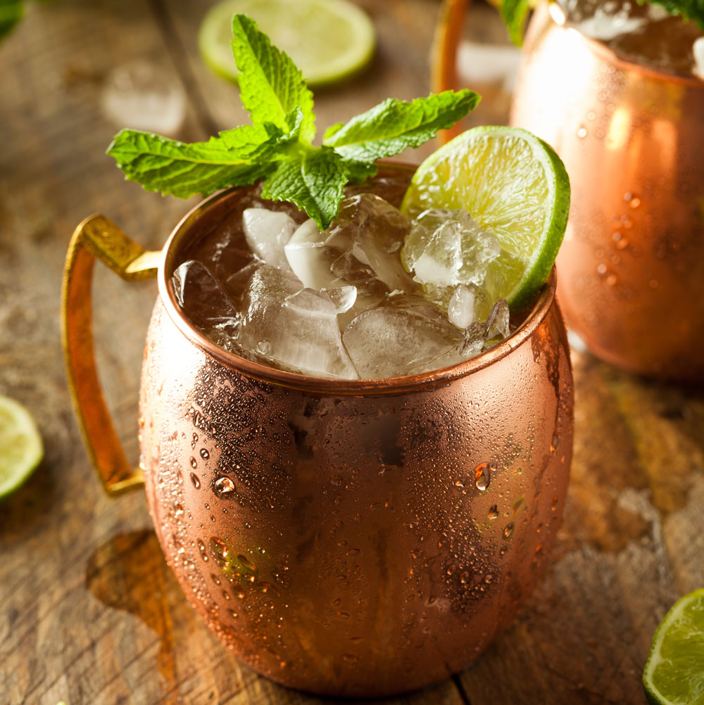

Moscow Mule

The classic Moscow Mule.
This classic cocktail is a great year round drink. It's refreshing in the warmer seasons, but also offers that sensational spice flavor in the colder months.
But perhaps the best part about this drink is it's simplicity and ease to make!
Ingredients:
- 1 1/2oz vodka
- 4 to 6oz ginger beer (not ginger ale!)
- Half a lime
- Ice (cubed or crushed)
- Lime wedge/mint sprig for garnish (optional)
Instructions:
- Fill a chilled copper mug with ice (a regular glass will do fine if you don't have copper mugs)
- Add vodka
- Add juice from squeezed half lime
- Add ginger beer (as much/little as you prefer)
- Gently stir
- Garnish with lime wedge and/or mint sprig if you'd like and enjoy!